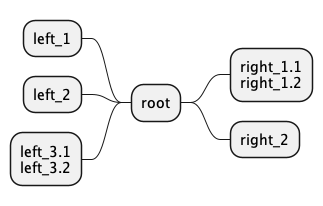

MindMap
Table of Contents
org-mode
@startmindmap * Debian ** Ubuntu *** Linux Mint *** Kubuntu *** Lubuntu *** KDE Neon ** LMDE ** SolydXK ** SteamOS ** Raspbian with a very long name *** <s>Raspmbc</s> => OSMC *** <s>Raspyfi</s> => Volumio @endmindmap

运算符改变图形方向
@startmindmap + OS ++ Ubuntu +++ Linux Mint +++ Kubuntu +++ Lubuntu +++ KDE Neon ++ LMDE ++ SolydXK ++ SteamOS ++ Raspbian -- Windows 95 -- Windows 98 -- Windows NT --- Windows 8 --- Windows 10 @endmindmap

改变图形方向
@startmindmap * count ** 100 *** 101 *** 102 ** 200 left side ** A *** AA *** AB ** B @endmindmap
多行表示
@startmindmap
* Class Templates
**:Example 1
<code>
template <typename T>
class cname{
void f1()<U+003B>
...
}
</code>
;
**:Example 2
<code>
other template <typename T>
class cname{
...
</code>
;
@endmindmap

@startmindmap + root **:right_1.1 right_1.2; ++ right_2 left side -- left_1 -- left_2 **:left_3.1 left_3.2; @endmindmap

多个 MindMap
@startmindmap * Root 1 ** Foo ** Bar * Root 2 ** Lorem ** Ipsum @endmindmap
Colors
with inline color
@startmindmap *[#Orange] Colors **[#lightgreen] Green **[#FFBBCC] Rose **[#lightblue] Blue @endmindmap

with style color
@startmindmap
<style>
mindmapDiagram {
.green {
BackgroundColor lightgreen
}
.rose {
BackgroundColor #FFBBCC
}
.your_style_name {
BackgroundColor lightblue
}
}
</style>
* Colors
** Green <<green>>
** Rose <<rose>>
** Blue <<your_style_name>>
@endmindmap

移除方框
@startmindmap * root node ** some first level node ***_ second level node ***_ another second level node ***_ foo ***_ bar ***_ foobar ** another first level node @endmindmap
缩放，生成图片大小
- scale 1.5
- scale 2/3
- scale 200 width
- scale 200 height
- scale 200*100
- scale max 300*200
- scale max 1024 width
- scale max 800 height
@startuml
scale 180*90
Bob->Alice : hello
@enduml